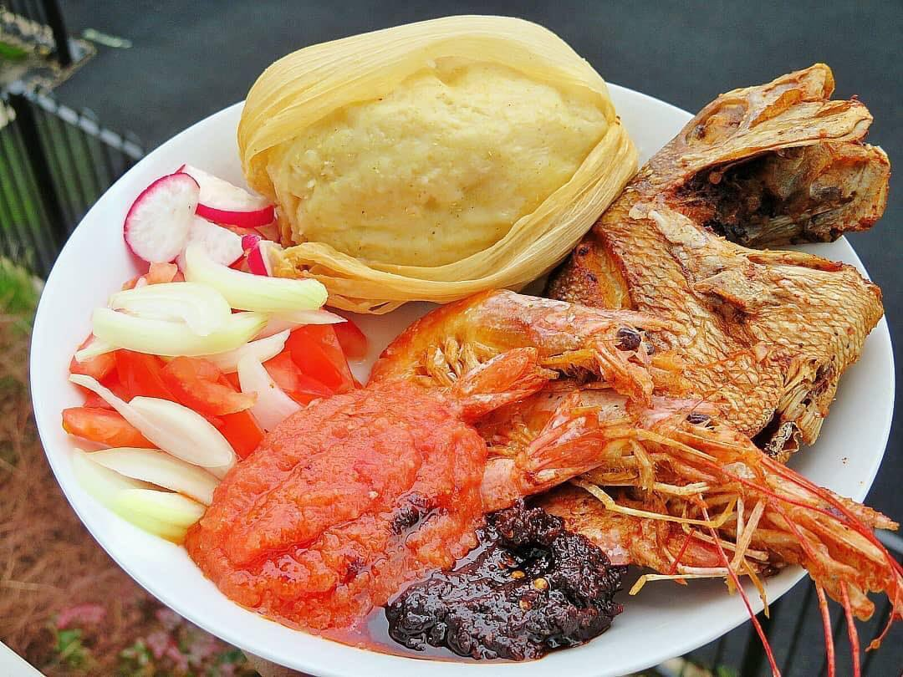

Kenkey

A Ghanaian staple for the ages
Kenkey is one of those divisive dishes. You either love it and can't live without it, or hate it and can't live
with it. There really is no in-between in my experience
For those who roam the "loving it" side of the fence, I will show you how to whip it up with pre-packaged
ingredients for a veritably sumptuous Sunday bash
Ingredients
- Ghana Best Kenkey
- Ghana Best Shito
- Scotch bonnet peppers
- Red Onions
- Tomatoes
- Ginger
- Fish of your choosing
Recipe
- Put all the premade ingredients on a plate
- Add the tomatoes, onion, peppers and ginger to a blender and get to pulsing
- Grill the fish of your choosing to the preparedness of your choosing